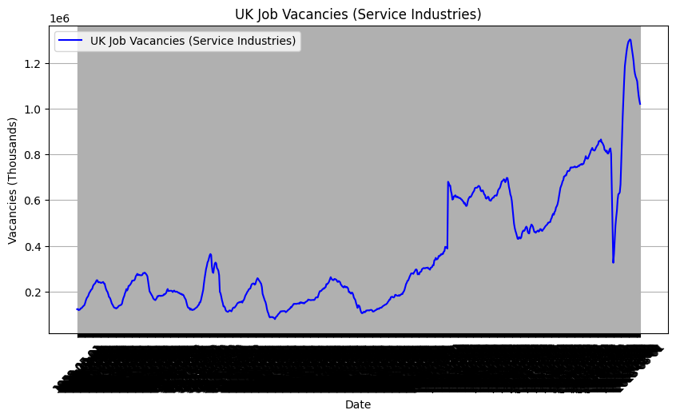
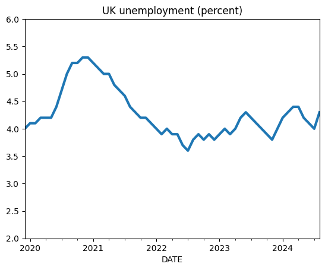
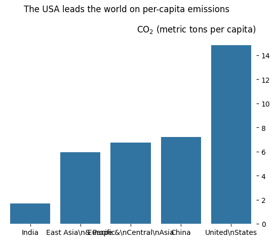

import matplotlib.pyplot as plt
import pandas as pd
import requests
from bs4 import BeautifulSoup
import textwrapIn [52]:
In [53]:
pd.read_csv(
"https://vincentarelbundock.github.io/Rdatasets/csv/dplyr/storms.csv", nrows=10
)| rownames | name | year | month | day | hour | lat | long | status | category | wind | pressure | tropicalstorm_force_diameter | hurricane_force_diameter | |
|---|---|---|---|---|---|---|---|---|---|---|---|---|---|---|
| 0 | 1 | Amy | 1975 | 6 | 27 | 0 | 27.5 | -79.0 | tropical depression | NaN | 25 | 1013 | NaN | NaN |
| 1 | 2 | Amy | 1975 | 6 | 27 | 6 | 28.5 | -79.0 | tropical depression | NaN | 25 | 1013 | NaN | NaN |
| 2 | 3 | Amy | 1975 | 6 | 27 | 12 | 29.5 | -79.0 | tropical depression | NaN | 25 | 1013 | NaN | NaN |
| 3 | 4 | Amy | 1975 | 6 | 27 | 18 | 30.5 | -79.0 | tropical depression | NaN | 25 | 1013 | NaN | NaN |
| 4 | 5 | Amy | 1975 | 6 | 28 | 0 | 31.5 | -78.8 | tropical depression | NaN | 25 | 1012 | NaN | NaN |
| 5 | 6 | Amy | 1975 | 6 | 28 | 6 | 32.4 | -78.7 | tropical depression | NaN | 25 | 1012 | NaN | NaN |
| 6 | 7 | Amy | 1975 | 6 | 28 | 12 | 33.3 | -78.0 | tropical depression | NaN | 25 | 1011 | NaN | NaN |
| 7 | 8 | Amy | 1975 | 6 | 28 | 18 | 34.0 | -77.0 | tropical depression | NaN | 30 | 1006 | NaN | NaN |
| 8 | 9 | Amy | 1975 | 6 | 29 | 0 | 34.4 | -75.8 | tropical storm | NaN | 35 | 1004 | NaN | NaN |
| 9 | 10 | Amy | 1975 | 6 | 29 | 6 | 34.0 | -74.8 | tropical storm | NaN | 40 | 1002 | NaN | NaN |
In [54]:
#
import requests
url = "https://api.ons.gov.uk/timeseries/JP9Z/dataset/UNEM/data"
response = requests.get(url)
print(f"请求状态码: {response.status_code}")
print(f"返回的原始内容: {response.text}")
#The interface API is no longer available, so I can't get the data at all!请求状态码: 404
返回的原始内容: This API is being decommissioned as part of a suite of work to improve the digital products and services we offer. It is planned to be fully retired on 25/11/2024. If you have any queries please contact us at apiservice@ons.gov.uk.
For the above, I made changes to the code. Using the FRED API key, query series_id=“LMJVTTUVGBM647S”, which is the series number of the UK job vacancies (in thousands).167ccd5ae95c579ae64d6b1295c563feThis is Jie Xu’s FRED API KEY
In [55]:
import requests
import pandas as pd
import matplotlib.pyplot as plt
# 替换为你的 FRED API key
api_key = "167ccd5ae95c579ae64d6b1295c563fe"
url = f"https://api.stlouisfed.org/fred/series/observations?series_id=LMJVTTUVGBM647S&api_key={api_key}&file_type=json"
response = requests.get(url)
data = response.json()['observations']
# 提取日期和职位空缺数量，过滤掉非数字数据
dates = [item['date'] for item in data]
values = []
for item in data:
try:
values.append(float(item['value']))
except ValueError:
values.append(None) # 使用 None 表示无效数据
# 创建 DataFrame 并去除无效数据
df = pd.DataFrame({'Date': dates, 'Vacancies': values})
df.dropna(inplace=True)
# 绘制折线图
plt.figure(figsize=(10, 5))
plt.plot(df['Date'], df['Vacancies'], label='UK Job Vacancies (Service Industries)', color='blue')
plt.xlabel('Date')
plt.ylabel('Vacancies (Thousands)')
plt.title('UK Job Vacancies (Service Industries)')
plt.xticks(rotation=45)
plt.legend()
plt.grid()
plt.show()
In [56]:
import pandas_datareader.data as web
df_u = web.DataReader("LRHUTTTTGBM156S", "fred")
df_u.plot(title="UK unemployment (percent)", legend=False, ylim=(2, 6), lw=3.0)
In [57]:
import pandas as pd
import requests
url = "https://databank.worldbank.org/source/millennium-development-goals/Series/EN.ATM.CO2E.KT"
html = requests.get(url).content
df = pd.read_html(html)[0]
print(df.columns)Index(['Indicator', 'Rule', 'Weighted Indicator', '%'], dtype='object')First, I went to Getting Data-Coding for Economists based on the code, but could not get the data. Then, I went to https://datacatalog.worldbank.org/indicator/b66c366b-bdce-eb11-bacc-000d3a596ff0/CO2-emissions–metric-tons-per-capita. this site to get the Data and the page keeps reporting an error: An error occurs. This could be due to
Our network is unusually busy The server is currently unavailable Please try again later or contact data@worldbank.org
Error ID: 9bcb1bcd7bd91946aaddafba37719f72. So I can only use excel sheet.
In [58]:
import pandas as pd
# 读取Excel文件，假设数据在第一个工作表
df = pd.read_excel('data\EN.ATM.CO2E.PC.xlsx')
# 重命名列（如果需要），确保列名与你的要求一致，这里假设原始列名分别为'Country Name'、'Year'、'EN.ATM.CO2E.KT'
df.rename(columns={'Country Name': 'country', 'Year': 'year', 'EN.ATM.CO2E.KT': 'EN.ATM.CO2E.PC'}, inplace=True)
# 选择需要的列并按照人均二氧化碳排放量排序
selected_data = df[['country', 'year', 'EN.ATM.CO2E.PC']].sort_values('EN.ATM.CO2E.PC')
# 显示处理后的数据表格
print(selected_data) country year EN.ATM.CO2E.PC
0 India 2017 1.704927
1 East Asia\n& Pacific 2017 5.960076
2 Europe &\nCentral\nAsia 2017 6.746232
3 China 2017 7.226160
4 United\nStates 2017 14.823245In [59]:
import seaborn as sns
fig, ax = plt.subplots()
sns.barplot(x="country", y="EN.ATM.CO2E.PC", data=df.reset_index(), ax=ax)
ax.set_title(r"CO$_2$ (metric tons per capita)", loc="right")
plt.suptitle("The USA leads the world on per-capita emissions", y=1.01)
for key, spine in ax.spines.items():
spine.set_visible(False)
ax.set_ylabel("")
ax.set_xlabel("")
ax.yaxis.tick_right()
plt.show()
For this link: https://stats.oecd.org/SDMX-JSON/data/PDB_LV/GBR+FRA+CAN+ITA+DEU+JPN+USA.T_GDPEMP.CPC/all?startTime=2010 can no longer be found.404 - File or directory not found. The resource you are looking for may have been deleted, renamed, or is temporarily unavailable.
In [60]:
url = "http://aeturrell.com/research"
page = requests.get(url)
page.text[:300]'<!DOCTYPE html>\n<html xmlns="http://www.w3.org/1999/xhtml" lang="en" xml:lang="en"><head>\n\n<meta charset="utf-8">\n<meta name="generator" content="quarto-1.5.56">\n\n<meta name="viewport" content="width=device-width, initial-scale=1.0, user-scalable=yes">\n\n<meta name="author" content="Arthur Turrell">\n'In [61]:
soup = BeautifulSoup(page.text, "html.parser")
print(soup.prettify()[60000:60500]) </div>
<div class="project-category">
<a href="#category=gender pay gap">
gender pay gap
</a>
</div>
<div class="project-category">
<a href="#category=labour">
labour
</a>
</div>
<div class="project-category">
<a href="#category=text analysis">
text analysis
</a>
</div>
</div>
<div class="project-details-listingIn [62]:
# Get all paragraphs
all_paras = soup.find_all("p")
# Just show one of the paras
all_paras[1]<p>Botta, Federico, Robin Lovelace, Laura Gilbert, and Arthur Turrell. "Packaging code and data for reproducible research: A case study of journey time statistics." <i>Environment and Planning B: Urban Analytics and City Science</i> (2024): 23998083241267331. doi: <a href="https://doi.org/10.1177/23998083241267331"><code>10.1177/23998083241267331</code></a></p>In [63]:
all_paras[1].text'Botta, Federico, Robin Lovelace, Laura Gilbert, and Arthur Turrell. "Packaging code and data for reproducible research: A case study of journey time statistics." Environment and Planning B: Urban Analytics and City Science (2024): 23998083241267331. doi: 10.1177/23998083241267331'In [64]:
projects = soup.find_all("div", class_="project-content listing-pub-info")
projects = [x.text.strip() for x in projects]
projects[:4]['Botta, Federico, Robin Lovelace, Laura Gilbert, and Arthur Turrell. "Packaging code and data for reproducible research: A case study of journey time statistics." Environment and Planning B: Urban Analytics and City Science (2024): 23998083241267331. doi: 10.1177/23998083241267331',
'Kalamara, Eleni, Arthur Turrell, Chris Redl, George Kapetanios, and Sujit Kapadia. "Making text count: economic forecasting using newspaper text." Journal of Applied Econometrics 37, no. 5 (2022): 896-919. doi: 10.1002/jae.2907',
'Turrell, A., Speigner, B., Copple, D., Djumalieva, J. and Thurgood, J., 2021. Is the UK’s productivity puzzle mostly driven by occupational mismatch? An analysis using big data on job vacancies. Labour Economics, 71, p.102013. doi: 10.1016/j.labeco.2021.102013',
'Haldane, Andrew G., and Arthur E. Turrell. "Drawing on different disciplines: macroeconomic agent-based models." Journal of Evolutionary Economics 29 (2019): 39-66. doi: 10.1007/s00191-018-0557-5']In [65]:
import requests
from bs4 import BeautifulSoup
def scraper(url):
try:
response = requests.get(url)
response.raise_for_status() # 检查请求是否成功，若不成功则抛出异常
soup = BeautifulSoup(response.text, 'html.parser')
return soup.title.string if soup.title else "No title found"
except requests.RequestException as e:
print(f"Error fetching page {url}: {e}")
return None
start, stop = 0, 50
root_url = "www.codingforeconomists.com/page="
info_on_pages = []
for i in range(start, stop):
url = root_url + str(i)
info = scraper(url)
info_on_pages.append(info)
print(info_on_pages)Error fetching page www.codingforeconomists.com/page=0: Invalid URL 'www.codingforeconomists.com/page=0': No scheme supplied. Perhaps you meant https://www.codingforeconomists.com/page=0?
Error fetching page www.codingforeconomists.com/page=1: Invalid URL 'www.codingforeconomists.com/page=1': No scheme supplied. Perhaps you meant https://www.codingforeconomists.com/page=1?
Error fetching page www.codingforeconomists.com/page=2: Invalid URL 'www.codingforeconomists.com/page=2': No scheme supplied. Perhaps you meant https://www.codingforeconomists.com/page=2?
Error fetching page www.codingforeconomists.com/page=3: Invalid URL 'www.codingforeconomists.com/page=3': No scheme supplied. Perhaps you meant https://www.codingforeconomists.com/page=3?
Error fetching page www.codingforeconomists.com/page=4: Invalid URL 'www.codingforeconomists.com/page=4': No scheme supplied. Perhaps you meant https://www.codingforeconomists.com/page=4?
Error fetching page www.codingforeconomists.com/page=5: Invalid URL 'www.codingforeconomists.com/page=5': No scheme supplied. Perhaps you meant https://www.codingforeconomists.com/page=5?
Error fetching page www.codingforeconomists.com/page=6: Invalid URL 'www.codingforeconomists.com/page=6': No scheme supplied. Perhaps you meant https://www.codingforeconomists.com/page=6?
Error fetching page www.codingforeconomists.com/page=7: Invalid URL 'www.codingforeconomists.com/page=7': No scheme supplied. Perhaps you meant https://www.codingforeconomists.com/page=7?
Error fetching page www.codingforeconomists.com/page=8: Invalid URL 'www.codingforeconomists.com/page=8': No scheme supplied. Perhaps you meant https://www.codingforeconomists.com/page=8?
Error fetching page www.codingforeconomists.com/page=9: Invalid URL 'www.codingforeconomists.com/page=9': No scheme supplied. Perhaps you meant https://www.codingforeconomists.com/page=9?
Error fetching page www.codingforeconomists.com/page=10: Invalid URL 'www.codingforeconomists.com/page=10': No scheme supplied. Perhaps you meant https://www.codingforeconomists.com/page=10?
Error fetching page www.codingforeconomists.com/page=11: Invalid URL 'www.codingforeconomists.com/page=11': No scheme supplied. Perhaps you meant https://www.codingforeconomists.com/page=11?
Error fetching page www.codingforeconomists.com/page=12: Invalid URL 'www.codingforeconomists.com/page=12': No scheme supplied. Perhaps you meant https://www.codingforeconomists.com/page=12?
Error fetching page www.codingforeconomists.com/page=13: Invalid URL 'www.codingforeconomists.com/page=13': No scheme supplied. Perhaps you meant https://www.codingforeconomists.com/page=13?
Error fetching page www.codingforeconomists.com/page=14: Invalid URL 'www.codingforeconomists.com/page=14': No scheme supplied. Perhaps you meant https://www.codingforeconomists.com/page=14?
Error fetching page www.codingforeconomists.com/page=15: Invalid URL 'www.codingforeconomists.com/page=15': No scheme supplied. Perhaps you meant https://www.codingforeconomists.com/page=15?
Error fetching page www.codingforeconomists.com/page=16: Invalid URL 'www.codingforeconomists.com/page=16': No scheme supplied. Perhaps you meant https://www.codingforeconomists.com/page=16?
Error fetching page www.codingforeconomists.com/page=17: Invalid URL 'www.codingforeconomists.com/page=17': No scheme supplied. Perhaps you meant https://www.codingforeconomists.com/page=17?
Error fetching page www.codingforeconomists.com/page=18: Invalid URL 'www.codingforeconomists.com/page=18': No scheme supplied. Perhaps you meant https://www.codingforeconomists.com/page=18?
Error fetching page www.codingforeconomists.com/page=19: Invalid URL 'www.codingforeconomists.com/page=19': No scheme supplied. Perhaps you meant https://www.codingforeconomists.com/page=19?
Error fetching page www.codingforeconomists.com/page=20: Invalid URL 'www.codingforeconomists.com/page=20': No scheme supplied. Perhaps you meant https://www.codingforeconomists.com/page=20?
Error fetching page www.codingforeconomists.com/page=21: Invalid URL 'www.codingforeconomists.com/page=21': No scheme supplied. Perhaps you meant https://www.codingforeconomists.com/page=21?
Error fetching page www.codingforeconomists.com/page=22: Invalid URL 'www.codingforeconomists.com/page=22': No scheme supplied. Perhaps you meant https://www.codingforeconomists.com/page=22?
Error fetching page www.codingforeconomists.com/page=23: Invalid URL 'www.codingforeconomists.com/page=23': No scheme supplied. Perhaps you meant https://www.codingforeconomists.com/page=23?
Error fetching page www.codingforeconomists.com/page=24: Invalid URL 'www.codingforeconomists.com/page=24': No scheme supplied. Perhaps you meant https://www.codingforeconomists.com/page=24?
Error fetching page www.codingforeconomists.com/page=25: Invalid URL 'www.codingforeconomists.com/page=25': No scheme supplied. Perhaps you meant https://www.codingforeconomists.com/page=25?
Error fetching page www.codingforeconomists.com/page=26: Invalid URL 'www.codingforeconomists.com/page=26': No scheme supplied. Perhaps you meant https://www.codingforeconomists.com/page=26?
Error fetching page www.codingforeconomists.com/page=27: Invalid URL 'www.codingforeconomists.com/page=27': No scheme supplied. Perhaps you meant https://www.codingforeconomists.com/page=27?
Error fetching page www.codingforeconomists.com/page=28: Invalid URL 'www.codingforeconomists.com/page=28': No scheme supplied. Perhaps you meant https://www.codingforeconomists.com/page=28?
Error fetching page www.codingforeconomists.com/page=29: Invalid URL 'www.codingforeconomists.com/page=29': No scheme supplied. Perhaps you meant https://www.codingforeconomists.com/page=29?
Error fetching page www.codingforeconomists.com/page=30: Invalid URL 'www.codingforeconomists.com/page=30': No scheme supplied. Perhaps you meant https://www.codingforeconomists.com/page=30?
Error fetching page www.codingforeconomists.com/page=31: Invalid URL 'www.codingforeconomists.com/page=31': No scheme supplied. Perhaps you meant https://www.codingforeconomists.com/page=31?
Error fetching page www.codingforeconomists.com/page=32: Invalid URL 'www.codingforeconomists.com/page=32': No scheme supplied. Perhaps you meant https://www.codingforeconomists.com/page=32?
Error fetching page www.codingforeconomists.com/page=33: Invalid URL 'www.codingforeconomists.com/page=33': No scheme supplied. Perhaps you meant https://www.codingforeconomists.com/page=33?
Error fetching page www.codingforeconomists.com/page=34: Invalid URL 'www.codingforeconomists.com/page=34': No scheme supplied. Perhaps you meant https://www.codingforeconomists.com/page=34?
Error fetching page www.codingforeconomists.com/page=35: Invalid URL 'www.codingforeconomists.com/page=35': No scheme supplied. Perhaps you meant https://www.codingforeconomists.com/page=35?
Error fetching page www.codingforeconomists.com/page=36: Invalid URL 'www.codingforeconomists.com/page=36': No scheme supplied. Perhaps you meant https://www.codingforeconomists.com/page=36?
Error fetching page www.codingforeconomists.com/page=37: Invalid URL 'www.codingforeconomists.com/page=37': No scheme supplied. Perhaps you meant https://www.codingforeconomists.com/page=37?
Error fetching page www.codingforeconomists.com/page=38: Invalid URL 'www.codingforeconomists.com/page=38': No scheme supplied. Perhaps you meant https://www.codingforeconomists.com/page=38?
Error fetching page www.codingforeconomists.com/page=39: Invalid URL 'www.codingforeconomists.com/page=39': No scheme supplied. Perhaps you meant https://www.codingforeconomists.com/page=39?
Error fetching page www.codingforeconomists.com/page=40: Invalid URL 'www.codingforeconomists.com/page=40': No scheme supplied. Perhaps you meant https://www.codingforeconomists.com/page=40?
Error fetching page www.codingforeconomists.com/page=41: Invalid URL 'www.codingforeconomists.com/page=41': No scheme supplied. Perhaps you meant https://www.codingforeconomists.com/page=41?
Error fetching page www.codingforeconomists.com/page=42: Invalid URL 'www.codingforeconomists.com/page=42': No scheme supplied. Perhaps you meant https://www.codingforeconomists.com/page=42?
Error fetching page www.codingforeconomists.com/page=43: Invalid URL 'www.codingforeconomists.com/page=43': No scheme supplied. Perhaps you meant https://www.codingforeconomists.com/page=43?
Error fetching page www.codingforeconomists.com/page=44: Invalid URL 'www.codingforeconomists.com/page=44': No scheme supplied. Perhaps you meant https://www.codingforeconomists.com/page=44?
Error fetching page www.codingforeconomists.com/page=45: Invalid URL 'www.codingforeconomists.com/page=45': No scheme supplied. Perhaps you meant https://www.codingforeconomists.com/page=45?
Error fetching page www.codingforeconomists.com/page=46: Invalid URL 'www.codingforeconomists.com/page=46': No scheme supplied. Perhaps you meant https://www.codingforeconomists.com/page=46?
Error fetching page www.codingforeconomists.com/page=47: Invalid URL 'www.codingforeconomists.com/page=47': No scheme supplied. Perhaps you meant https://www.codingforeconomists.com/page=47?
Error fetching page www.codingforeconomists.com/page=48: Invalid URL 'www.codingforeconomists.com/page=48': No scheme supplied. Perhaps you meant https://www.codingforeconomists.com/page=48?
Error fetching page www.codingforeconomists.com/page=49: Invalid URL 'www.codingforeconomists.com/page=49': No scheme supplied. Perhaps you meant https://www.codingforeconomists.com/page=49?
[None, None, None, None, None, None, None, None, None, None, None, None, None, None, None, None, None, None, None, None, None, None, None, None, None, None, None, None, None, None, None, None, None, None, None, None, None, None, None, None, None, None, None, None, None, None, None, None, None, None]In [66]:
df_list = pd.read_html(
"https://simple.wikipedia.org/wiki/FIFA_World_Cup", match="Sweden"
)
# Retrieve first and only entry from list of dataframes
df = df_list[0]
df.head()| Years | Hosts | Winners | Score | Runner's-up | Third place | Score.1 | Fourth place | |
|---|---|---|---|---|---|---|---|---|
| 0 | 1930 Details | Uruguay | Uruguay | 4 - 2 | Argentina | United States | [note 1] | Yugoslavia |
| 1 | 1934 Details | Italy | Italy | 2 - 1 | Czechoslovakia | Germany | 3 - 2 | Austria |
| 2 | 1938 Details | France | Italy | 4 - 2 | Hungary | Brazil | 4 - 2 | Sweden |
| 3 | 1950 Details | Brazil | Uruguay | 2 - 1 | Brazil | Sweden | [note 2] | Spain |
| 4 | 1954 Details | Switzerland | West Germany | 3 - 2 | Hungary | Austria | 3 - 1 | Uruguay |
pdf part
In [6]:
import PyPDF2
from pathlib import Path
def read_pdf_text(file_path):
text = ""
with open(file_path, 'rb') as file:
reader = PyPDF2.PdfReader(file)
for page in reader.pages:
text += page.extract_text()
return text
pdf_file_path = Path("D:\360MoveData\Users\75903\Desktop\SuYibo-Homework\data\pdf_with_table.pdf")
pdf_text = read_pdf_text(pdf_file_path)
print(pdf_text[:220])3
2 Quantifying Fuel -Saving Opportunit ies from Specific Driving
Behavior Changes
2.1 Savings from Improving Individual Driving Profiles
2.1.1 Drive Profile Subsample from Real -World Travel Survey
The interiIn [4]:
import tabula
import os
# 设置 PDF 文件路径
pdf_path = os.path.join('data', 'pdf_with_table.pdf')
# 使用 tabula 读取 PDF 中的表格数据
tables = tabula.read_pdf(pdf_path, pages='all')
# 打印第一个表格的数据（你可以根据实际需求修改处理方式）
if len(tables) > 0:
print(tables[0])Failed to import jpype dependencies. Fallback to subprocess.
No module named 'jpype' Unnamed: 0 Unnamed: 1 Unnamed: 2 Unnamed: 3 Percent Fuel Savings Unnamed: 4
0 Cycle KI Distance NaN NaN NaN
1 Name (1/km) (mi) Improved Decreased Eliminate Decreased
2 NaN NaN NaN Speed Accel Stops Idle
3 2012_2 3.30 1.3 5.9% 9.5% 29.2% 17.4%
4 2145_1 0.68 11.2 2.4% 0.1% 9.5% 2.7%
5 4234_1 0.59 58.7 8.5% 1.3% 8.5% 3.3%
6 2032_2 0.17 57.8 21.7% 0.3% 2.7% 1.2%
7 4171_1 0.07 173.9 58.1% 1.6% 2.1% 0.5%